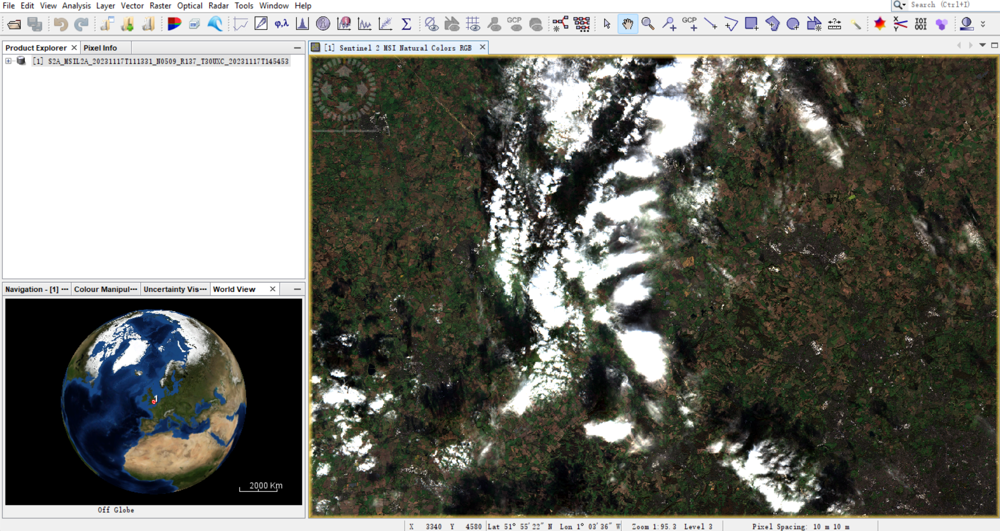
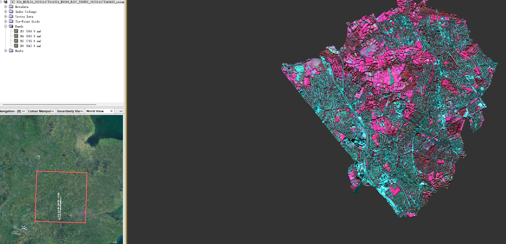

Week1 - Intro to Remote Sensing
Summary:
First week, OK, let’s go.
Remote Sensing
This term is closely associated with GIS, recognized as a tool across various fields. High-resolution remote sensing images, paired with advanced analysis techniques, enable precise and timely monitoring of urban environments. There are two types of sensors. Passive sensors detect natural energy, typically sunlight, while active sensors emit their own signals, such as electromagnetic waves, and measure their return. Examples include photographic and infrared sensors as passive; radar and sonar as active.
The nature wavelength can be calculated through: \[ \lambda(\text{wavelength}) = \frac{c (\text{velocity of light})}{v (\text{frequency})} \]
Scatter
Before reaching the sensor, energy can be absorbed by surfaces or scattered by atmospheric particles. The sky’s blue color results from blue light’s shorter wavelengths scattering more easily. As the sun’s angle changes, increased distance reduces blue light scattering to our eyes, allowing longer wavelengths like reds and oranges to dominate. This visibility is due to atmospheric molecules scattering light, with other colors being scattered away, leaving primarily orange or red hues visible.
Energy on the way to the sensor may be absorbed or scattered by atmospheric particles, explaining the sky’s blueness due to the easier scattering of blue light’s shorter wavelengths. With the sun’s angle shift, the greater distance prevents blue light scattering, making red and orange hues, which have the longest wavelengths, more visible. This phenomenon occurs as the atmosphere scatters light, allowing only orange or red to reach our eyes.
Energy heading towards the sensor is either absorbed or atmospherically scattered. The sky appears blue because blue light’s short wavelengths scatter more efficiently. However, as the sun shifts, the increased scattering distance reduces blue visibility, making longer wavelengths like red and orange more apparent. This effect is facilitated by atmospheric scattering, leaving predominantly orange or red light visible.
Resolutions
Spatial: Raster cell size ranges from 10cm to several kilometers.
Spectral: This aspect involves detecting various wavelengths across the electromagnetic spectrum, extending beyond visible light. The color of objects is determined by the wavelengths they reflect, with the rest being absorbed or scattered. Observation limitations arise from wavelengths absorbed by water vapor, ozone, and other gases. Spectral resolution is categorized by the number of detectable bands. Spectral signature measurement is not exclusive to remote sensing but can also be performed with spectroradiometers in laboratories or on the field, necessitating calibration against a pure white reference panel.
Radiometric: Revisit times of sensors vary, with lower resolutions indicating larger pixel sizes. Remote sensing utilizes fluorescence to identify materials and evaluate conditions by analyzing wavelength emissions after radiation exposure.
Temporal: Different sensors vary in energy sensitivity, with higher resolutions providing greater detail (e.g., 8 bit = 256 values, 4 bit = 16 values).
Application
Wójtowicz et al.(Wójtowicz et al. 2016) apply remote sensing technologies within agriculture, and Szpakowski and Jensen (Szpakowski and Jensen 2019) investigate its implications for fire ecology. The former paper discusses remote sensing’s critical role in agricultural applications such as crop yield prediction, nutrient level assessment, and weed management. It highlights the utility of vegetation indices, with a focus on NDVI, for evaluating crop health and progress. Furthermore, the paper reviews remote sensing’s diverse platforms, including terrestrial, aerial, and satellite, each offering unique benefits in terms of spatial and spectral resolution.
However, Remote sensing in agriculture is not without its challenges. The efficacy of remote sensing data can be undermined by environmental changes, including lighting and weather, posing difficulties for consistent data measurement. Signal versus Noise Distinction: The task of differentiating crop stress signals from the “noise” created by other elements, such as soil and non-photosynthetic plant material, is notably challenging. Technological Demands: The requirement for high-resolution data to monitor small-scale or early agricultural developments necessitates the use of sophisticated technology, which can be prohibitively expensive.
The review by Szpakowski and Jensen (Szpakowski and Jensen 2019) offers an extensive evaluation of remote sensing applications in fire ecology, discussing aspects such as fire risk assessment, fuel mapping, active fire detection, estimation of burned areas, assessment of burn severity, and the characterization and monitoring of post-fire vegetation recovery. It focuses on the use of spectral sensors, lidar, and the innovative application of UAS technologies, providing a discussion of current methodologies and showcasing relevant research examples.
So it is important to address the challenges of environmental variability, signal interpretation, and technological advancement for unlocking its full potential. Further research and development in this field are essential for enhancing its application in precision agriculture and beyond.
Try SNAP
Just follow the steps in practical one by one, let’s do it.
Load the London ward shapefile for masking. When I first came to SNAP, it is totally a strange thing for me. After loading the zip file and converted to default RGB filed, the area I chose looks like this.
 
Ahhh, a huge area of white or chaos. Actually,it confused me a lot and I can not get any useful information from them, and I spend an hour to download all the files (sad face). Till I figure out these are clouds and I choose a band that shows the satellite view, I finally tells the differences between soil and green covered area and water (sea). Even though I can’t use these data, I believe they will be useful in the future.
Reflection
Week one is quite interesting for me, learning sensor and wave phythsics related knowledge. Reflecting on this week’s content, I’m struck by the elegance of remote sensing and its practical applications. It’s fascinating how we can use wavelengths and frequencies to unveil details of the Earth’s surface, like a cosmic detective uncovering secrets from space. The challenges, like differentiating vital data from atmospheric noise and the cost of technology, remind me that this field is as grounded in real-world issues as it is in theoretical physics.
This knowledge transcends academic theory, playing a crucial role in practical solutions such as enhancing agricultural productivity and evaluating wildfire hazards. While my first practical with tools like SNAP was baffling, it was a necessary step towards proficiency. These skills, while complex, could change farming and emergency management.
I’m realizing that even when specific technologies may not be immediately useful, the underlying principles are universally valuable. This week’s lessons have reinforced my belief that remote sensing is an essential, transformative element of modern science. 🔥